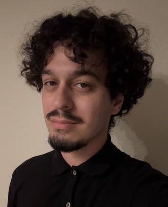

About me
Hello! My name is Jerry Barillas and I am an undergraduate here at the University of California, San Diego majoring in Cognitive Science (specialization in Design & Interaction) and I currently have a minor in Computer Science. I am actively looking for opportunities to sharpen my skills in full stack development, either through projects, classes, or internships. In my free time I like to listen to music, go out to eat with friends, and if time permits it, play video games.
HobbiesBackground
I am a 21 year old Hispanic born and raised in Los Angeles, California (specifically South Central, Los Angeles) with a passion for full stack development. I have always been curious about technology since a kid and that curiosity combined with my love for video games pushed me towards the field of software engineering. I enjoy helping others as well, so that technical work and idea of solving a problem required for full stack development is what feels the most rewarding in my work and is why I like to center my projects toward solving an inconvenience people may have.